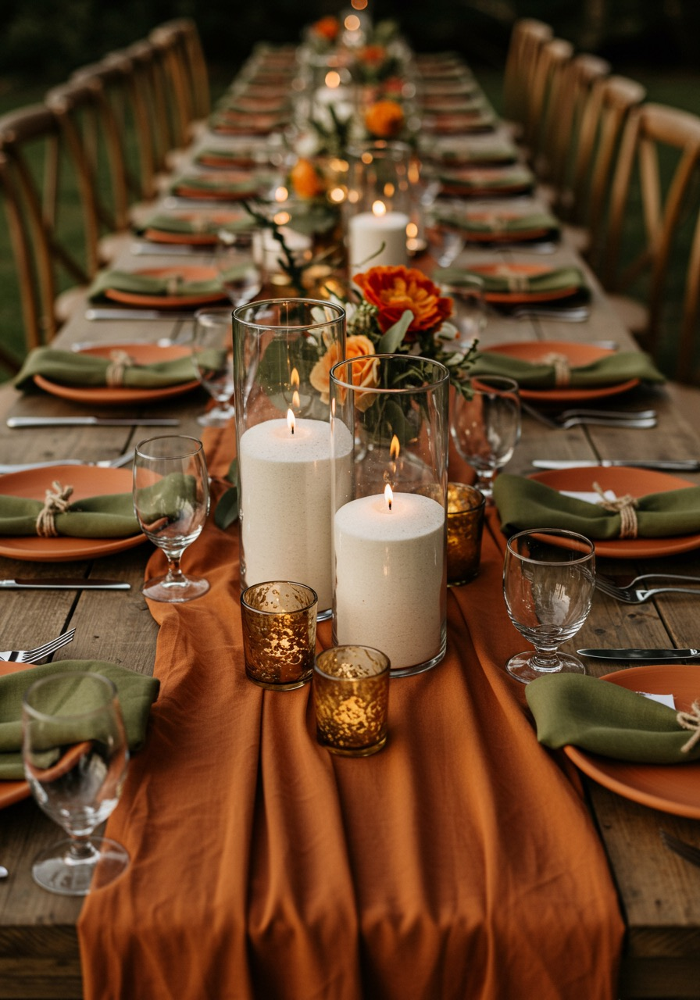

How to Get Candle Approval from Your Wedding Venue in Perth
April 19, 2026
For couples planning a candlelit wedding in Perth, venue approval is one of the most common early questions. The good news is that many venues are open to candles when the setup is explained clearly and the styling feels sensible and well thought through.
If you are unsure how to ask the question or what details matter most, a calm and practical approach usually helps. The aim is not to push for a yes. It is to make it easy for the venue to understand exactly what you are planning.
Once you know what your venue allows, you can check your date and get a quote here.
Why venues can be cautious about candles
Venues are often cautious about candles for understandable reasons. Their job is to look after the space, their staff, and everyone attending the event.
Open flame concerns: Even when the styling looks beautiful, venues need to think carefully about any live flame on tables or in walkways.
Table spacing: If tables are tight or guests will be moving around closely, venues may want to know how much room the candles will take up.
Florals, fabric, and decor: Overhanging florals, loose draping, napkins, and styling layers can all affect whether the venue feels comfortable with candles nearby.
Bumping or tipping risks: Venues may be more cautious if candles are being placed in high-traffic areas or on crowded tables.
Venue rules and insurance policies: Some venues simply have internal rules about where candles can be used, how they must be styled, or whether LED options are required in certain spaces.
What helps venues feel more comfortable
When you ask about candles, it helps if the setup sounds tidy, intentional, and easy to picture.
Lustre Hire is a DIY candle hire business in Perth, with pickup from Bull Creek, and our candles are presented in glass vessels. That kind of setup is often easier for venues to assess than something vague or loosely described.
Practical things that can help include:
Candles in glass vessels: This usually gives venues a clearer sense of containment and presentation.
Stable styling: A setup that feels balanced and secure is usually easier for a venue to visualise approving.
Not overcrowding tables: Leaving enough space around place settings, florals, and tableware can make the styling feel more manageable.
Keeping candles away from loose fabric and overhanging florals: Venues will often want to know that candles are not being packed too tightly into surrounding decor.
Being clear about placement: It helps to say whether candles are only on reception tables or also planned for other areas.
A tidy overall plan: The easier the setup is to explain, the easier it is for the venue to respond clearly.
How to ask your venue
The simplest approach is to ask early, keep the message clear, and give the venue enough detail to answer properly. You do not need a long email. A short, practical message is usually best.
You can mention:
• that the candles are in glass vessels
• where you would like to place them
• whether they are for reception tables only or other areas too
• that you are happy to follow any venue restrictions or placement rules
A sample message could look like this:
Hi [Venue Name], we are planning to use candles in glass vessels for our wedding styling and wanted to check whether this is allowed at your venue. At this stage we are considering candles on our reception tables [and any other planned areas]. We are happy to follow any restrictions you have around placement or styling. Could you please let us know what is permitted?
That gives the venue a straightforward starting point without sounding pushy or vague.
Questions to ask your venue
If you want to avoid back-and-forth later, it helps to ask a few practical questions upfront:
• Are candles allowed at all?
• Do they need to be fully enclosed or in glass?
• Are there any areas where candles are not allowed?
• Are there restrictions around florals, draping, or other styling nearby?
• Are LED candles required in some spaces?
• Does the venue have any specific setup rules we should follow?
These questions keep the conversation simple and make it easier to plan the rest of your styling with confidence.
What to do if your venue says no
If your venue does not approve candles, or only allows them in certain places, try not to panic. It does not always mean you have to scrap the whole look.
You may be able to:
• limit candles to approved areas only
• use fewer candles in more controlled locations
• adjust your styling plan so tables feel less crowded
• mix real candles with LED options if the venue requires it in some spaces
A flexible approach usually works better than trying to argue the point. Once you know the venue’s boundaries, you can make better styling decisions around them.
If you want more background on venue-friendly candle styling, our related post on venue safety and candle approval is also a helpful read.
Final reassurance
Asking your venue about candles does not need to feel awkward. In most cases, the easiest approach is to ask early, be clear about the setup, and keep the conversation simple.
If you would like to understand the process on our side as well, you can review how it works, then once you know what your venue allows, you can check your date, get a quote, and book online when you are ready.
If you are already planning ahead for pickup and return, our How to Return page gives a quick overview too.
Ready to plan around your venue?
Check your date, get a quote, and work out a candle setup that suits your space.
Check Availability